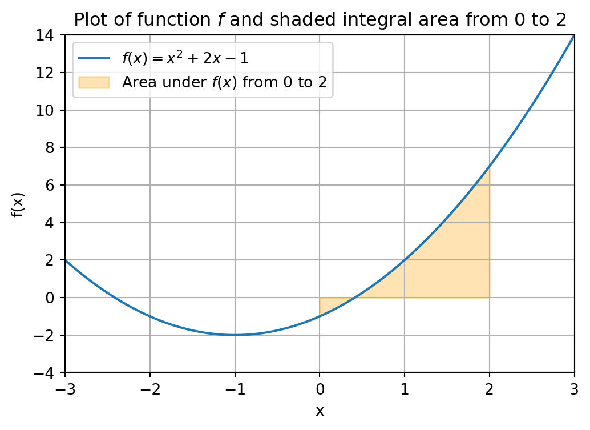

2 + 35
In this chapter we will learn how to use Python as a calculator and see some basic programming concepts.
We start with the most basic arithmetic operations: Addition, subtraction, multiplication and division are given by the standard +, -, * and / operators that you would use in other programs like Excel. For example, addition:
2 + 35Subtraction:
5 - 32Multiplication:
2 * 36Division:
3 / 21.5It is also possible to do multiple operations at the same time using parentheses. For example, suppose we wanted to calculate: \frac{2+4}{4 \cdot 2} = \frac{6}{8} = 0.75 We can calculate this in Python as follows:
(2 + 4) / (4 * 2)0.75
With the ** operator (two stars) we can raise a number to the power of another number. For example, 2^3=2\times 2\times 2 = 8 can be computed as
2 ** 38Do not use ^ for exponentiation. This actually does a very different thing in Python.
Compute the following expressions using the operator +, -, *, / and **:
In Python we can assign single numbers to variables and then work with and manipulate those variables.
Assigning a single number to a variable is very straightforward. We put the name we want to give to the variable on the left, then use the = symbol as the assignment operator, and put the number to the right of the =. The = operator binds a number (on the right-hand size of =) to a name (on the left-hand side of =).
To see this at work, let’s set x=2 and y=3 and calculate x+y:
x = 2
y = 3
x + y5When we assign x=2, in our code, the number is not fixed forever. We can assign a new number to x. For example, we can assign the number 6 to x instead. The sum of x (which is 6) and y ( which is 3), is now 9:
x = 6
x + y9Finally, you cannot set x=2 with the command 2 = x. That will result in an error. The name must be on the left of = and the number must be on the right of =.
Define variables a,b,c with numbers 19, 3 and 7, respectively. Compute the following expressions:
If you want to print multiple expressions within the same code snippet, you can use the print() function of Python for each of the expressions.
x = 2
y = 3
print(x + y)
print(x - y)5
-1We can also store multiple variables in one object, a so-called list. A list with numbers is created by writing down a sequence of numbers, separated by commas, in between two brackets [ and ].
z = [3, 9, 1, 7]
z[3, 9, 1, 7]We can also create lists with fractional numbers.
z = [3.1, 9, 1.9, 7]
z[3.1, 9, 1.9, 7]To access the numbers in the list, we can index the list at the position of interest. If we want to get the number at position i in the list, we use the syntax z[i].
z[1]9Something strange is happening here… The left-most number in the list is 3.1, but z[1] returns 9. This happens because Python actually starts counting at index 0 (instead of 1).
The left-most number in a Python list is located at position 0. The number next to that at position 1, etc. That is, the i-th number in a list with n numbers can be found at position i - 1 for i = 1,\dots,n
In other words, the “first” number in the list is located at position 0, and we can access it using z[0] instead.
Below we index the number of the list at positions i \in \{0,1,2,3\} separately.
z[0]3.1z[1]9z[2]1.9z[3]7Consider the list a = [11, 41, 12, 35, 6, 33, 7].
Suppose we want to compute the sum of the numbers in the list a of Exercise 3.3. We could do this manually by indexing every number and adding them one by one.
a = [1, 4, 2, 5, 6, 3, 7]
a[0] + a[1] + a[2] + a[3] + a[4] + a[5] + a[6]28
In fact, we can also define a new variable to store this number in. Let us call this variable total_sum.
a = [1, 4, 2, 5, 6, 3, 7]
total_sum = a[0] + a[1] + a[2] + a[3] + a[4] + a[5] + a[6]
total_sum28
If the list is a is very long, for example containing thousands of elements, then it becomes very tedious to compute the total sum with the approach above. Such long lists are not uncommon in real-life data.
A much better way is to use a for-loop, which lets us go through each element in the list one at a time. Here’s how we could compute the sum of the numbers in the list a using a for-loop:
a = [1, 4, 2, 5, 6, 3, 7]
total_sum = 0
for i in [0,1,2,3,4,5,6]:
total_sum = total_sum + a[i]
print(total_sum)28Let’s break down what is happening here.
total_sum with initial value 0. This variable will be the running total of the numbers in a that we are adding up. print(total_sum).for i in [0,1,2,3,4,5,6]: indicates that we want to carry out a piece of code multiple times with different values for the variable i.
for and in are Python keywords, meaning they have a very specific purpose in Python. They get a different color when you type them in a code block.:.total_sum = total_sum + a[i]. total_sum = total_sum + a[i] has to be executed with different values for i, we indent this line (using Tab on the keyboard).total_sum with its current value plus the number at position i in a, i.e., the number a[i]. In the table below this process is illustrated for all the values of i.i |
a[i] |
total_sum after this iteration |
|---|---|---|
| 0 | 1 | 0 + 1 = 1 |
| 1 | 4 | 1 + 4 = 5 |
| 2 | 2 | 5 + 2 = 7 |
| 3 | 5 | 7 + 5 = 12 |
| 4 | 6 | 12 + 6 = 18 |
| 5 | 3 | 18 + 3 = 21 |
| 6 | 7 | 21 + 7 = 28 |
In the first iteration of the for-loop (i = 0), we have the initial number 0 for total_sum so adding a[0] results in a new value of total_sum being 0 + 1 = 1.
In the second iteration, with now total_sum equal to 1, we add the number a[1], which results in the new value of total_sum being 1 (current number of total_sum) plus a[1] (which is 4), resulting in a new running total of 1 + 4 = 5.
If we would be interested in only computing, e.g., the sum of the first three numbers in a, we could replace the index list [0,1,2,3,4,5,6] by [0,1,2].
a = [1, 4, 2, 5, 6, 3, 7]
total_sum = 0
for i in [0,1,2]:
total_sum = total_sum + a[i]
total_sum7Create the list a = [1, 4, 2, 5, 6, 3, 7].
If you want to execute more lines of code in every iteration of the for-loop, you should indent all of them. In the code below we compute the running total total_sum and also use the print() command of Python to print the value of the running total after every addition. This results in all the values in the right column of the above table being printed.
a = [1, 4, 2, 5, 6, 99, 3]
total_sum = 0
for i in [0,1,2,3,4,5,6]:
total_sum = total_sum + a[i]
print(total_sum)1
5
7
12
18
117
120One final note to make is that this approach might still require a lot of typing if the list a contains many values. For example, if we are given a list of a thousand values, we would have to type a list with values 0 through 999 in the for-loop above.
There is a way to do this quicker, by using the range() function in Python. If we instead use the line for i in range(7):, then Python executes the indented code below for the values i = 0,1,2,3,4,5,6. Note that i = 7 is not included!
In general using for i in range(n): executes the indented lines below for the (in total n) values i = 0,1,2,\dots,n-1.
a = [1, 4, 2, 5, 6, 99, 3]
total_sum = 0
for i in range(7):
total_sum = total_sum + a[i]
print(total_sum)1
5
7
12
18
117
120In many programming situations, we want the computer to make decisions based on certain conditions. For example, if a number is negative, we might want to handle it differently than if it were positive. In Python, we can do this using conditional statements, also known as if/else statements.
Let’s look at a basic example. We first make a general remark about printing text in Python.
If you want to print text in Python, you should put it in between quotation marks.
print("Hello world")Hello worldIf you want to print both text and variables, you can do that in the same print() command separating them with a comma.
x = 3
print("The value of x is", x)The value of x is 3Note that in "The value of x is" part, the x-symbol is interpreted merely as a letter, not a variable.
Now let us look at an example.
x = 5
if x > 0:
print("x is positive")
else:
print("x is not positive")x is positiveHere is what this code does:
x = 5 assigns the number 5 to the variable x.if x > 0: checks whether x is greater than zero, i.e, Python checks whether the condition x > 0 is true or false. If the condition is true, it executes the indented code below, which is a print-statement in this case. Python then no longer checks the else: statement.else:, which is a different print-statement in this case.We can also have multiple conditions using elif, which stands for “else if”. Below we add the third statement that checks if x is precisely equal to zero. Also here, as soon as Python reaches a statement that is true, it does not check the remaining statements anymore.
x = 0
if x > 0:
print("x is positive")
elif x == 0:
print("x is zero")
else:
print("x is negative")x is zeroIn the code above, we use the syntax x == 0 to define the statement that checks whether x is precisely equal to 0. You should not use x = 0 (otherwise Python would confuse this with assigning a value of 0 to the variable x, which is not what we want).
This checks the conditions one by one from top to bottom and executes the first indented code block where the condition is true. If you want more than three conditions, you should start with an if statement, then elif statements, and finish with an else.
Finally, if you want to execute multiple lines of code for one or more of the conditions, you should indent all those lines under the respective conditions.
x = 1
if x > 0:
print("x is positive")
print(x)
elif x == 0:
print("x is zero")
else:
print("x is negative")
print(x)x is positive
1Create the list a = [1, 4, -4, 0, 5, -3, -7] in Python.
Use a for-loop in combination with the code above to check for every number in a whether it is positive, zero, or negative. If a number is positive you should print the message "The number is positive", if it is zero "The number is zero" and if it is negative "The number is negative".
The output of your piece of code should be as follows.
The number is positive
The number is positive
The number is negative
The number is zero
The number is positive
The number is negative
The number is negativeLet us now look at an example from mathematics. Suppose we want to compute the roots x of a quadratic equation of the form: ax^2 + bx + c = 0 Here a,b and c are known given numbers, and the goal is to find one or more x’s that satisfy the above equation.
The solution(s) to this problam are given by the quadratic formula (Dutch: abc-formule): x = \frac{-b \pm \sqrt{b^2 - 4ac}}{2a}
Here \pm means that one solution is given by choosing a plus symbol in the place of \pm, and the other solution by choosing the minus symbol.
The expression under the square root, called the discriminant D = b^2 - 4ac, determines how many (real) roots exist:
Create variables a = 3, b = 2 and c = -1. Create a variable D for the discriminant (in terms of a,b and c).
y and z you can use print(y,z) or use print(y) and print(z) on different indented lines. You can play around with your code by choosing different numbers for a,b and c, and see if you get different output cases for both questions above.
Create the lists a = [3,7,1,4], b = [2,7,4,4] and c = [11,3,0,1]. Write a for-loop that executes your code of Exercise 3.6(ii) for every combination (a_i,b_i,c_i) where a_i,b_i,c_i are the numbers at position i in the lists a,b,c, respectively, for i = 0,1,2,3.
Your output should look like this.
The formula has no real roots
The formula has no real roots
-4.0 0.0
-0.5Suppose we are given a list g = [9.1, 1.3, 5.4, 5.6, 5.74, 6.74, 8.25, 9.2, 7.1, 6.9] of student grades.
round() function. For example round(5.3) gives 5, and round(5.9) gives 6. Think of a way to use the round() function to round to half integers.On g as given, the output should be as follows.
9.0
1.5
5.5
5.5
5.5
6.5
8.0
9.0
7.0
7.0and keyword to check multiple conditions in an if-statement.On g as given, the output should be as follows.
9.0
1.5
5
6
6
6.5
8.0
9.0
7.0
7.0The latter procedure is in fact how your grades in the EOR bachelor program are rounded.
In this chapter we will see some of the basic math functionality that Python has to offer. Many of these tasks can be carried out by your graphing calculator as well, but Python can also handle much more difficult problems that you will see in the course of you academic career.
We start with the basics of defining a function, such as a quadratic formula.
If we want to compute a certain mathematical expression for many different variables, it is often convenient to use a Python function for this.
For example, consider the quadratic function f(x) = x^2 + 2x^2 -1. Say we want to know the values of f(-3), f(-2.5), f(1) and f(4). What we would like to do is to ‘automate’ the computation of a function value, so that we do not have to write out the whole function everytime.
For this we can use a Python function for this as follows.
def f(x):
return x**2 + 2*x - 1What does the code above do? First of all the syntax to tell Python we want to define a function called f that takes as input a number x is def f(x):.
We next have to tell Python what the function is supposed to compute. On the second line, with one tab indented, we have the return statement. Here we write down the expression that the function should return (or compute), which in our case is the function value f(x) = x^2 + 2x^2 -1.
We can now compute the function value f(x) for any value of x. What happens is that Python calls the function f with input the chosen value of x, and then returns the function value f(x), i.e., the expression in the return statement.
f(-2)-1f(1)2Note that you can also name the function differently, for example we could also have done def quadratic_function(x):. You should then use the name quadratic_function too in the command well you call the Python function to compute the function value f(x).
def quadratic_function(x):
return x**2 + 2*x - 1
quadratic_function(1)2Just as your graphing calculator we can plot a Python function, search for its roots, integrate a certain area under the curve and much more! More advanced tasks that Python can handle will introduced in later courses in the EOR bachelor program.
If you want to get a better understanding of the codes in the coming sections, you could already have a look at Chapter 9 of this course document of another course taught at the Tilburg School of Economics and Management. We do not explain the code here, but give it as a teaser what more is possible with Python!
Consider again the function f(x) = x^2 + 2x - 1. A visualization of this function is given below. If you want to plot a function in Python you have to make use of functionality from NumPy and Matplotlib which are so-called Python packages.
Packages are functions written by other people to make our live easy, i.e., so that we do not have to write every code file from scratch in Python.
import numpy as np
import matplotlib.pyplot as plt
# Define the x range
x = np.linspace(-3, 3, 600)
# Define the function f
def f(x):
return x**2 + 2*x -1
# Create the plot
plt.figure(figsize=(6, 4))
plt.plot(x, f(x), label='$f(x) = x^2 + 2x - 1$')
# Add labels and title
plt.title('Plot of the function f on the interval [-3,3]')
plt.xlabel('x')
plt.ylabel('f(x)')
# Add a grid
plt.grid(True)
# Set range
plt.xlim(-3,3)
plt.ylim(-4,14)
# Add a legend
plt.legend()
# Show the plot
plt.show()
Similarly, the SciPy package can be used to carry out various mathematical tasks and algorithms, making it very important for data analysis purposes.
The code below uses a pre-written Python function called fsolve() from SciPy to compute the roots of a function f. In other words, fsolve() is a mathematical algorithm for finding the root of a function, such as Newton’s method, that someone implemented in Python and made available publicly for the whole world to use. If you are interested in the source code of this function, you can look it up in the documentation of Python (more specifically, SciPy in this case).
import scipy.optimize as optimize
def f(x):
return x**2 + 2*x - 1
guess = 3
f_zero = optimize.fsolve(f,guess)
print("A root of the function f is given by", f_zero)A root of the function f is given by [0.41421356]The function fsolve() takes two inputs: a function of which we want to find a root, and an initial guess (3 in our case) of where the root is.
Entering an initial guess for where the root is located, is in some sense the equivalent of giving a bracket in which the root should lie on your graphing calculator. In fact, there are other root finding functions available in Python that work in this way, i.e., that require you to give an initial bracket, just as you do on your graphing calculator.
Different initial guesses might lead to different roots found by Python. In fact, as you can see the function f has two roots of which the above code finds the right one. We could find the left root by filling in a different initial guess, e.g., -3 instead of 3.
guess = -3
f_zero = optimize.fsolve(f,guess)
print("A root of the function f is given by", f_zero)A root of the function f is given by [-2.41421356]Finally, it is also possible to use built-in functionality from SciPy to integrate a function. Below we integrate the function f from 0 to 2. This integral area is illustrated in the figure below.
import numpy as np
import matplotlib.pyplot as plt
# Define the x range for the full plot
x = np.linspace(-3, 3, 600)
# Define the function f
def f(x):
return x**2 + 2*x - 1
# Create the plot
plt.figure(figsize=(6, 4))
plt.plot(x, f(x), label='$f(x) = x^2 + 2x - 1$')
# Define the interval for shading (0 to 2)
x_fill = np.linspace(0, 2, 300)
plt.fill_between(x_fill, f(x_fill), alpha=0.3, color='orange',
label='Area under $f(x)$ from 0 to 2')
# Add labels and title
plt.title('Plot of function $f$ and shaded integral area from 0 to 2')
plt.xlabel('x')
plt.ylabel('f(x)')
# Add a grid
plt.grid(True)
# Set axis limits
plt.xlim(-3, 3)
plt.ylim(-4, 14)
# Add a legend
plt.legend()
# Show the plot
plt.show()
from scipy.integrate import quad
# Define the function to integrate
def f(x):
return x**2 + 2*x - 1
# Perform the integration from 0 to 2
result, error = quad(f, 0, 2)
# Print the result
print("Integral of f(x) from 0 to 2 is:", result)
print("Numerical error in integral computation is at most", error)Integral of f(x) from 0 to 2 is: 4.666666666666666
Numerical error in integral computation is at most 5.666271351443603e-14So far we have illustrated task with Python that you graphing calculator can also carry out. The advantage of Python is that it can handle much more complicated computing tasks and handle much more difficult mathematical functions, that your graphing calculator is not able to handle.
Many of these tasks you will come across in various courses of the EOR bachelor program, already starting with the course Linear Optimization in the second quartile of year 1.
Furthermore, throught the EOR bachelor program you will also see some other programming languages such as R and Matlab. Many of the general programming ideas, such as for-loops and conditional statements, exist in those languages as well, but sometimes the syntax (i.e., the grammar of the programming language) is different than that of Python.